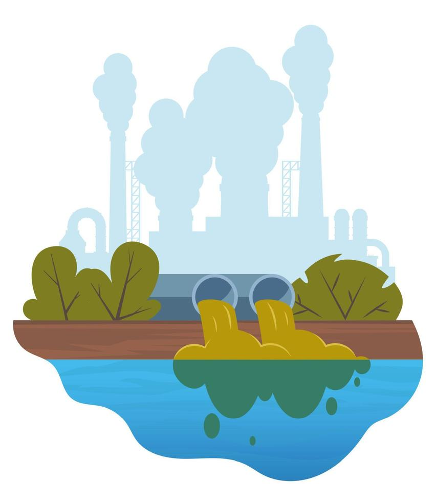

The Problem
When industrial wastewater is discharged without adequate treatment, pollutants can enter rivers, canals and streams. If you notice unusual water colour, persistent foam or a strong odour, record what you saw and where it happened.
- Unusual colour
- Persistent foam
- Strong odour